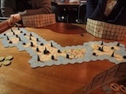

My Favorite
This is my favorite because

Board games are unique in the way that they help us to relax. There are tons of different board games for people to enjoy from all across the world. Whether you enjoy intense strategy such as Chess or Settler's of Catan, or a luck-based game like Quax, there is always something for everyone to enjoy. This site goes over popular board games for you to try with a form to submit what your favorite board game is. It goes over how board games play a role in your health, in education across the world, how board games came to be, and how they are designed!
This is my favorite because